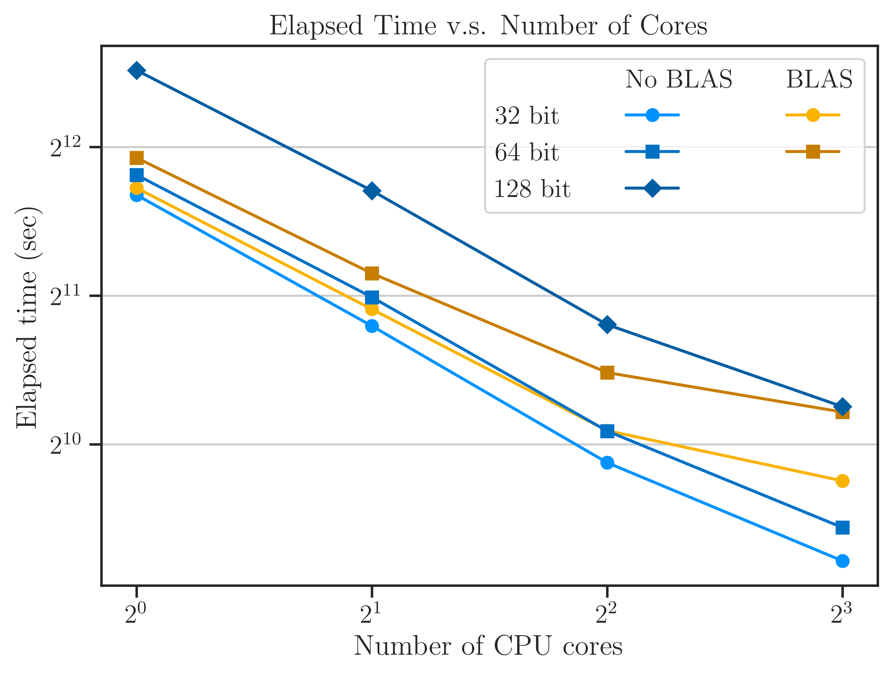
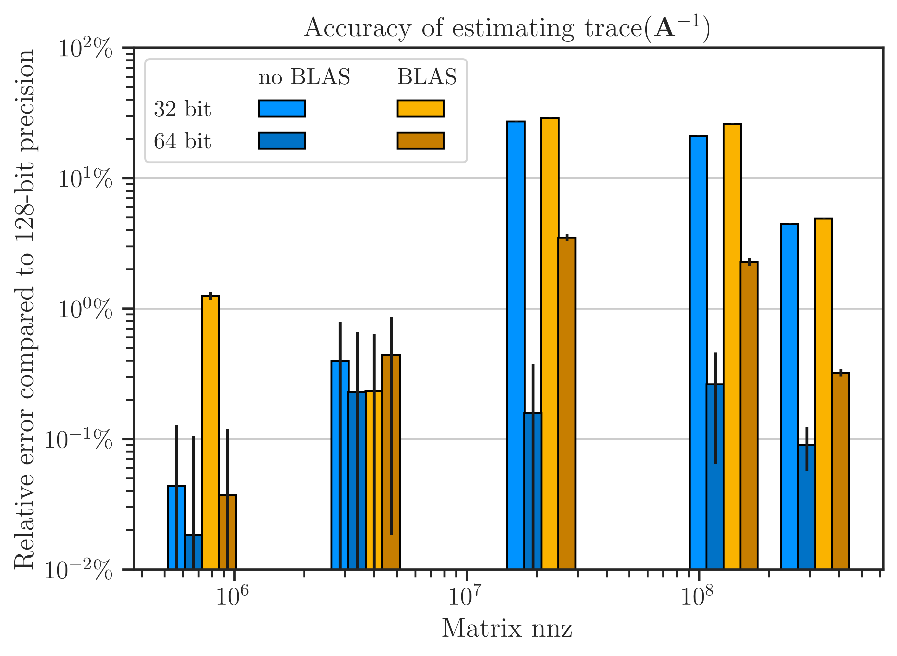

Comparison of Performance with and without OpenBLAS#
Almost all computational software are built upon existing numerical libraries for basic linear algebraic subprograms, such as BLAS, OpenBLAS, NVIDIA® cuBLAS, and Intel® Math Kernel Library, to name a few. imate uses cuBLAS and cuSparse for basic vector and matrix operations on GPU devices. However, for computation on CPU, imate comes with its comes with its own library for basic numerical operations for vector and matrix operations, which supports both dense and sparse matrices. Despite this, imate can also be compiled with OpenBLAS instead of its own library.
Tip
To compile imate using OpenBLAS, export the environment variable:
export USE_CBLAS=1
or set USE_CBLAS=1 in /imate/_definitions/definition.h. By default, USE_CBLAS is set to 0.
Note
OpenBLAS library has three levels of functionalities: level one, two, and three, for vector-vector, matrix-vector, and matrix-matrix operations, respectively. OpenBLAS, however, only supports operations on dense matrices. As such, when imate is compiled with OpenBLAS, it only uses level one functionalities of OpenBLAS for sparse data. For level two and three operations, imate uses its own library.
Here we compare the performance and accuracy of imate with and without using OpenBLAS. In this numerical experiment, we compute
using imate.traceinv() function on both dense and sparse matrix \(\mathbf{A}\).
Using Dense Matrices#
For our experiment, we create a Gramian matrix \(\mathbf{A} = \mathbf{C}^{\intercal} \mathbf{C}\) where \(\mathbf{C}\) a Toeplitz matrix defined by
We set \(a = 2\) and \(b = 1\) and we vary the matrix size by powers of two, \(n = 2^8, 2^9, \dots, 2^{14}\). The above matrix can be simply generated using imate.toeplitz() function by
>>> from imate import toeplitz
>>> n = 2**14
>>> a, b = 2, 1
>>> A = toeplitz(a, b, size=n, gram=True, dtype='float32')
>>> # Convert to dense matrix
>>> A = A.toarray()
In the above, we convert the sparse matrix to dense matrix since OpenBLAS only operates on dense matrices.
Note
When OpenBLAS is used, we cannot test matrices with 128-bit data type (set by dtype in the above) since OpenBLAS only supports 32-bit and 64-bit.
Exact Solution#
The analytic value of (1) for \(a \neq b\) and \(n \gg 1\) can be obtained as
We can use imate.sample_matrices.toeplitz_traceinv() function to compute (1) for the Toeplitz matrix by:
>>> from imate.sample_matrices import toeplitz_traceinv
>>> A = toeplitz_traceinv(a, b, size=n, gram=True)
5461.222222222222
We use the above exact value as benchmark for our experiment.
Using Stochastic Estimator#
We use stochastic Lanczos quadrature (SLQ) method using imate.traceinv() by setting method=slq. We also specify the number of Monte-Carlo sampling with min_num_samples and max_num_samples to 200, and we set lanczos_degree to 50.
>>> from imate import tracein
>>> trace, info = traceinv(A, method='slq', min_num_samples=200, max_num_samples=200,
... lanczos_degree=50, return_info=True)
>>> print(trace)
Run Benchmark Script#
1. Run locally#
Run /benchmark/scripts/benchmark_openblas_dense.py twice as follows:
Compile imate using OpenBLAS:
export USE_CBLAS=1 python setup.py install python ./benchmark_openblas_dense.py -o True # Uses openblas
Compile mate without OpenBLAS:
export USE_CBLAS=0 python setup.py install python ./benchmark_openblas_dense.py -o False # Does not use openblas
The outputs are stored in
/benchnmark/pickle_results/benchmark_with_openblas_dense.pickle for using OpenBLAS.
/benchnmark/pickle_results/benchmark_without_openblas_dense.pickle for not using OpenBLAS.
2. Run on cluster#
To run on a cluster with SLURM:
cd jobfiles
sbatch jobfile_benchmark_openblas_dense.sh
When submitting the jobs on the cluster, make sure that the cpu is the same as the previous runs. For example, nodes on savio2 between n027 and n150 are Intel Xeon E5-2670 v3.
Results#
All 24 cores of Intel Xeon E5-2670 v3 processor are used.
Each result is repeated 10 times and the wall time is averaged between these 10 repeats. However, only the last repeat is used to store the value of traceinv. This is becase if we average traceinv between these repeats, the number of samples would be 10*200, not 200. But, we onlt want to show the error of traceinv for 200 samples.
Cholesky method is not repeated, since it is not a stochatic method and it runtime is more-or-less very similar in each test.
Using Sparse Matrices#
 {kind=link}
{kind=link}